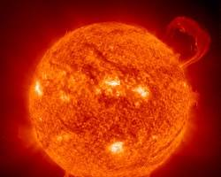
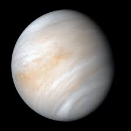
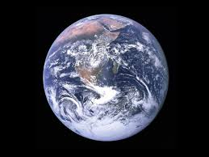

SUN

The Sun is a 4.5 billion-year-old yellow dwarf star located at the heart of our solar system. 1 It is a hot, glowing ball of hydrogen and helium, and its immense gravity holds everything in our solar system in orbit—from the largest planets to the smallest bits of space debris.
| property | value | comparison to earth |
|---|---|---|
| mass | 1.99 * 1030 | ~333,000 times |
| diameter | ~1.4 million km (865,000 miles) | ~109 times wider than Earth (1 million Earths could fit inside) |
| Surface Temp | ~5,500 °C (10,000 °F) | Extremely hot plasma |
| Distance to Earth | ~150 million km (93 million miles) | Light takes about 8.3 minutes to reach us |
MERCURY

Planet Mercury is the smallest and closest planet to the Sun in our Solar System. Named after the swift Roman messenger god, it is a rocky, terrestrial world characterized by extreme temperature swings, a massive metallic core, and an orbital speed that makes it the fastest planet in the solar system.
Key Facts at a Glance :
- Distance from the Sun: 36 million miles (58 million km) on average
- Diameter: 3,032 miles (4,880 km)—only slightly larger than Earth's Moon
- Year Length (Orbit): 88 Earth daysDay
- Length (Rotation): 59 Earth days
- Moons: 0
- Surface Temperature: -180°C to 430°C (-290°F to 800°F)
VENUS

Venus is the second planet from the Sun and Earth’s closest planetary neighbor. Often called Earth’s "twin" due to its similar size and mass, it is a scorching, rocky world completely covered by a thick, toxic atmosphere that traps heat in a runaway greenhouse effect.
- Distance from the Sun: Average of 67 million miles (108 million km)
- Diameter: 7,520 miles (12,104 km)
- Length of a Year: 225 Earth days
- Length of a Day: 243 Earth days
- Moons: None
Planetary Stats
EARTH

Earth, our home, is the third planet from the Sun and the only known place in the universe to harbor life. As a rocky "terrestrial" planet, it features abundant liquid water covering roughly \(71\%\) of its surface and is protected by a breathable, nitrogen-rich atmosphere.
- Average Distance from the Sun: 93 million miles (150 million kilometers), exactly 1 Astronomical Unit (AU).
- Approximately 4.5 billion years old.
- Size: 7,917.5 miles in diameter; the fifth-largest planet in the solar system.
- Moons: One natural satellite.
PLANETARY STATISTICS
MARS

Mars is the fourth planet from the Sun and the second-smallest planet in the Solar System. Known as the "Red Planet" due to iron oxide (rust) on its surface, it is a cold, dry, rocky world with a thin atmosphere and distinct seasons.
- Size & Structure: With a diameter of about 4,212 miles (6,779 km), it is roughly half the size of Earth. However, its surface land area is nearly identical to Earth's dry landmass.
- Time & Seasons: A Martian day (called a sol) lasts 24 hours and 37 minutes, almost exactly like Earth. Because Mars is farther from the Sun, one Martian year takes 687 Earth days. It is tilted on its axis by 25.2 degrees, giving it seasons like Earth.
- Surface & Extremes: Mars is home to Olympus Mons, the largest volcano in the Solar System. Standing 14 miles (24 km) high, it is roughly three times the height of Mount Everest. It also features Valles Marineris, a massive canyon system that spans thousands of miles.
- Atmosphere: The atmosphere is thin and composed mostly of carbon dioxide, with traces of argon and nitrogen.
- Moons: Mars has two small, potato-shaped moons, Phobos and Deimos, which are widely believed to be captured asteroids.
- Temperature: The planet gets quite cold; temperatures can reach 20°C (68°F) near the equator, but can plummet to as low as -140°C (-220°F) near the poles.
Key Facts About Mars
JUPITER

Jupiter is the largest planet in our solar system, with a mass more than twice that of all other planets combined. It is a gas giant primarily composed of hydrogen and helium. Famous for its swirling storms and rings, this colossal world boasts the shortest day of any planet
- Mass & Size: It is about 11 times the diameter of Earth. You could fit roughly 1,300 Earths inside a hollow Jupiter.
- No Solid Surface: As a gas giant, it does not have a hard crust like Earth; its interior is likely a dense, super-hot soup of liquid and metallic hydrogen
- Day on Jupiter: Despite its gigantic size, it spins incredibly fast on its axis, completing one full rotation in just under 10 hours (about 9.9 hours).
- Year on Jupiter: Its immense distance from the Sun means it takes 12 Earth years to complete a single orbit.
Key Characteristics
SATURN

Saturn is the sixth planet from the Sun and the second-largest in our solar system. Famous for its spectacular, complex ring system, it is a massive gas giant primarily composed of hydrogen and helium.
- Distance from Sun: ~886 million miles (1.4 billion kilometers), taking sunlight about 80 minutes to reach it.
- Orbit: Takes roughly 29.4 Earth years to complete one orbit around the Sun.
- Rotation: Spins incredibly fast on its axis, making a full "day" only 10.7 hours long.
- Size: Roughly 9 times wider than Earth; if Earth were the size of a nickel, Saturn would be the size of a volleyball
Quik Planetary Overview
URANUS

Uranus is the seventh planet from the Sun, classified as an ice giant. It is a cold, windy world famous for spinning on its side, making it orbit the Sun like a rolling ball. It is primarily composed of icy materials like water, ammonia, and methane
- Distance from the Sun: Average of 1.8 billion miles (2.9 billion km).
- Size: Roughly four times wider than Earth; you could fit about 63 Earths inside it.
- Length of a Year: It takes Uranus about 84 Earth years to complete one full orbit around the Sun.
- Length of a Day: A single rotation takes only about 17 hours and 14 minutes.
- Temperature: It reaches a frigid -224 deg celcius, making it the coldest planet in the solar system.
Key Facts Figures
NEPTUNE

Neptune is the eighth and farthest known planet from the Sun. Classified as an "ice giant," it is a frigid, dark world primarily made of heavier elements like water, ammonia, and methane over a rocky core. It is famous for having the most violent winds in the solar system.
- Location & Distance: It is about 4.5 billion kilometers (30 AU) away from the Sun, meaning it takes sunlight over 4 hours to reach it.Extreme
- Winds: Despite its distance and freezing temperatures, Neptune has the windiest weather in the solar system. Methane clouds whip around the planet at supersonic speeds of up to 2,000 kilometers per hour.
- Planetary Time: One day on Neptune passes quickly, taking just about 16 hours to rotate once. However, its orbit is massive, taking roughly 165 Earth years to complete a single trip around the Sun.
- Color: Its vibrant blue hue is caused by methane in the upper atmosphere, which absorbs red light.
- Moons & Rings: Neptune has 16 known moons, with Triton being the largest and most famous (it has active ice volcanoes). The planet is also encircled by a faint system of six rings.
- Math Discovery: It is the only planet in our solar system discovered through mathematical predictions rather than regular sky observations, after scientists noticed irregularities in Uranus's orbit.
- Voyager 2: It has only ever been visited up close by a single spacecraft, NASA's Voyager 2, which flew by in 1989.